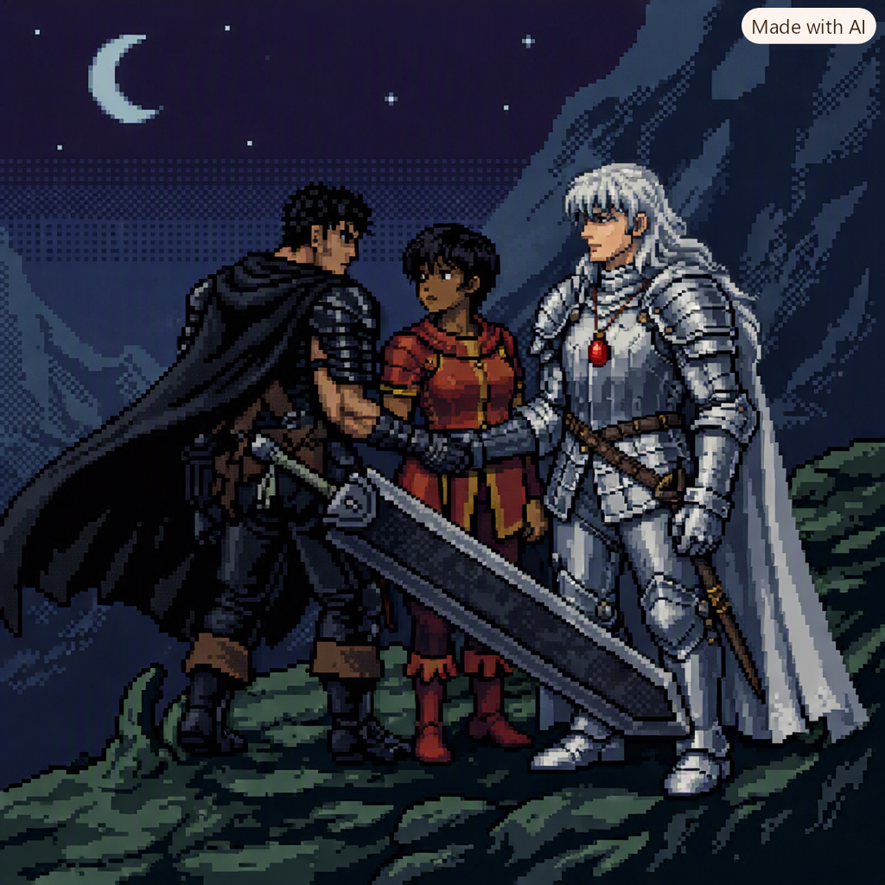

A Forja do Espadachim Negro
Por: Millena Oliveira
Bem-vindos ao mundo imersivo de berserk

O lado obscuro do mundo de Berserk
Por: Millena Oliveira
O sentimento obscuro do espadachim negro

"O poder do behelit sobre a amizade"
Por: Millena Oliveira
A verdadeira insignificância da amizade comparado com seus sonhos
Todos os direitos reservados a mim, autora do blog